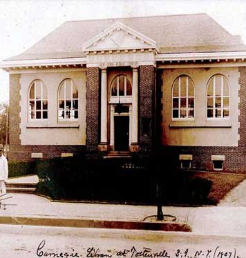

The Places You'll Go!
New York public Library
|  |
Cost: Free!
|
|
An anglicization of Nieuw Dorp, Dutch for New Village – is a neighborhood in Staten Island, one of the five boroughs of New York City, United States. The community lies near the foot of Todt Hill, with Grant City immediately to its north, Oakwood bordering to the south, and New Dorp Beach bordering on the east. Formerly one of the most important towns on the island before suburbanization, it was the center of much activity during the American Revolution. Despite surrounding development, the neighborhood has retained its distinct character as a town, and is one of the most thriving commercial centers on the Island which in the 1960s spread along Hylan Boulevard from New Dorp Lane and led to the construction of five shopping centers, anchored by supermarkets and department stores, with the largest being Hylan Plaza which opened in 1966.[1] Like all of Staten Island, the area of New Dorp was populated by American Indians going back over 10,000 years. At the time of the arrival of the Europeans in the 17th Century, it was inhabited primary by the Raritans and other subgroups of the Lenape tribe. The first recorded European settlement of the area was in 1671. The English, after having taken over the New Netherland colony from the Dutch, expanded the previous Dutch settlements along the South Shore at Oude Dorp ("Old Village") which had been established ten years earlier. In the late 19th century, it became the home to members of the prominent Vanderbilt family, many of whom are buried here in the Moravian Cemetery. The Vanderbilt farm was later used by the U.S. Army, as Miller Air Field and in the 1970s became part of Gateway National Recreation Area. Today, the neighborhood's population is a majority Italian-American, Irish-American, Albanian-American, Polish-American and Russian-American ancestry. |